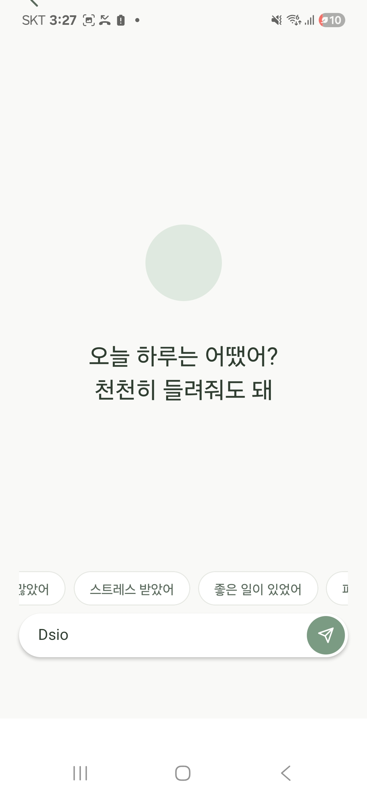

Mobile · 창업 프로젝트
마음챙김 가이드 앱 mylo
자극에서 벗어나, 내면에 다가갈 수 있는 환경.
React Native
Expo
UX Design
차분한 인터랙션


- 배경 및 문제 정의
- 『내면소통』을 읽고, 내가 겪는 불안이 외부 자극에 가려 내면의 감정과 신호를 충분히 인식하지 못하는 데서 비롯될 수 있다는 점에 주목했습니다. 비슷한 어려움을 겪는 사람들이 자극에서 벗어날 수 있는 환경을 만들고자 했습니다.
- 해결 방향
- 채팅 상담 앱 형태를 따르되, 사용자가 자신을 돌아보는 과정에 집중하도록 UI를 설계했습니다. 차분한 애니메이션, 질문 하나만 띄우는 대화 화면, 입력 부담을 줄이는 가이드 칩으로 자연스러운 감정 표현을 유도했습니다.
- 배운 점
- 개발과 UX 설계에 집중한 반면 초기 사용자 유입과 수익 구조 고려가 부족했습니다. 좋은 제품을 만드는 것만큼 고객 수요 확인과 유입 구조 설계가 중요하다는 점을 배웠습니다.